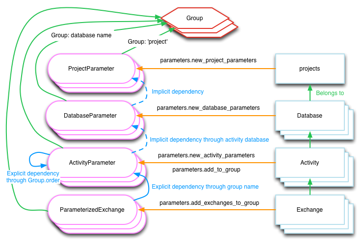

Brightway#
Brightway Components#
Brightway2 is split into several main packages:
Brightway25 is the umbrella package, as well as documentation. When installing this package, it will pull as dependencies the following packages:
Brightway2-data handles storing and searching all data sources (databases, LCIA methods, etc.).
Brightway2-calc does LCA calculations.
Brightway2-io tools for the import, export, and management of inventory databases and impact assessment methods. LCA calculations.
Brightway2-analyzer analyzes input data like databases and methods, as well as the result of LCA calculations.
Brightway2-parameters Library for storing, validating, and calculating with parameters.
Projects#
Data in Brightway2 is structured in a hierarchy. At the top level, we have projects. A project is self-contained, with its own copy of data, LCIA methods, calculations, assumptions, and any other data you need. Each project is completely independent of other projects.Projects are saved as subdirectories in the file system.

Inside a project we have a number of objects that store data. The most common data objects are inventory databases and impact assessment methods. However, non-LCA data can also be included. For example, a set of vehicle registrations and lifetimes could also be stored in a project, and used to generate fleet-based scenarios for sustainability assessment of mobility services.
Project are created in a suitable location for your operating system with the help of the appdirs library.
Projects can be easily created, copied, manipulated, or deleted. See the projects example notebook.
Warning
Brightway2 uses atomic file
writes to prevent data corruption,
but files are hard; you should
make regular backups using the backup-data-directory function.
Inventory Databases#
In Brightway2, a database is the object used to organize a set of nodes and edges in a life cycle inventory graph of the industrial supply chain and natural world. For example, a specific version of ecoinvent could be a database, but so would a set of biosphere flows, as biosphere flows are also nodes in our inventory graph. Databases can be big, like ecoinvent, or as small as a single dataset. You can have as many databases as you like, and databases can have links into other databases. You can also have databases that each depend on each other.
SimaPro differentiates between what it calls projects and libraries, but both would be a database in Brightway2.
Databases can be easily created, copied, modified, iterated over, searched, and delted. See the databases example notebook.
Activities and Exchanges#
In the database, nodes are called activities, and include transforming and market activities, but also products and biosphere flows. Edges are called exchanges, and describe a link between two nodes. An exchange could describe the input of a product to a transforming activity, or an emission of a biosphere flow by an activity, or the name and amount of a product produced by an activity.
Activity data format#
A database consists of inventory datasets, and inventory datasets are text documents, human-readable data that you can manipulate manually in a text editor, or change en masse programmatically. Because they can be exported as text, and in a format that is accessible to almost every computer language (JSON), activity datasets can be easily exported and used by other programs.
Inventory datasets have a very flexible and free text form; even an
empty dictionary (e.g. {}) is a valid LCI dataset in Brightway2.
However, some fields are suggested for common use. Note that you can
always add extra fields as needed by your application. Here is a
selection from an example dataset from the US LCI:
{
'categories': ['Wood Product Manufacturing', 'Softwood Veneer and Plywood Mnf.'],
'location': 'RNA',
'name': 'Green veneer, at plywood plant, US PNW',
'type': 'process',
'unit': 'kilogram'}
'exchanges': [{
'amount': 1.0,
'code': 6,
'group': 2,
'input': ('US LCI', '6ddb4cc00f9e42aa48515248256c31dc'),
'type': 'production',
'uncertainty type': 0},
{'amount': 7.349999999999999e-06,
'code': 5,
'group': 4,
'input': ('biosphere', '51447e58e03a40a2bbd9abf45214b7d3'),
'type': 'biosphere',
'uncertainty type': 0}],
}
The document structure is:
name (string): Name of this activity.
type (string): If this is
"process", or omitted completely, Brightway2 will treat this as a inventory process with inputs and output(s). If you want to store additional information in a Database outside of the list of processes, specify a custom type here. For example, the list of biosphere flows is also an inventory database, but as these are flows, not processes, they have the type"emission". Similarly, if you wanted to separate processes and products, you could create database entries for the products, with the type"product".categories (list of strings, optional): A list of categories and subcategories. No length limits.
location (string, optional): A location identifier. Default is GLO, but this can be changed in the
user-preferences.unit (string): Unit of this activity. Units are normalized when written to disk.
exchanges (list): A list of activity inputs and outputs, with its own schema.
input (database name, database code): The technological activity that is linked to, e.g.
("my new database", "production of ice cream")or('biosphere', '51447e58e03a40a2bbd9abf45214b7d3'). See alsodataset-codes.type (string): One of
production,technosphere, andbiosphere. Seeexchanges.amount (float): Amount of this exchange.
uncertainty type (integer): Integer code for uncertainty distribution of this exchange, see
uncertainty-typefor more information. There can be other uncertainty fields as well.comment (string, optional): A comment on this exchange. Used to store pedigree matrix data in ecoinvent v2.
Uniquely identifying activities {#dataset-codes}#
Linking activity datasets within and between databases requires a way to
uniquely identify each dataset - Brightway2 calls this unique identifier
a code. A code can be a number, like 1, or a string of numbers and
letters, like swiss ch33se. When you create datasets manually, you
will need to assign each dataset a code. When you import a database, the
codes will be automatically generated for you.
Activity hashes#
When you import an ecospold or SimaPro dataset, the data format does
not provide a way to uniquely identify each dataset. Brightway2 will
generate codes that look like a bunch of nonsense, e.g.:
6d336c64e3a0ff08dee166a1dfdf0946. In this case, Brightway2 identifies
an activity or flow with the MD5
hash of a few attributes: For ecoinvent 2, the name, location,
unit, and categories. For ecoinvent 3, the activity and
reference product names.
Activities must be uniquely identified#
Activities are identified by their database name and a unique code. A
code is a string of letters and numbers that uniquely identifies an
activity within the database. Codes can be written by humans, e.g.
"Chris's first pony", or generated by by the computer using an
algorithm.
Activities do not have very many required fields; aside from database
and code, the only other required field is name, but most activities
will have a location and unit as well. If no type is specified for
an activity, then the activity is assumed to be a process. Other types
include product and biosphere for biosphere flows. Activity type
is used to determine whether an activity should be placed in the
biosphere or technosphere matrices during LCA calculations.
Exchanges are links between two activities of any type. Exchanges have
an input and an output: input is the activity being consumed or
produced, and output is the consumer or producer. Exchanges should
also have an amount and a type. Common types include technosphere,
biosphere, and production. Multiple exchanges between two activities
are allowed, and will be added together during LCA calculations.
Many activities have a reference product, which is an exchange of type
production where the input is the same as the output.
Brightway2 allows multioutput processes; you are responsible for making sure the final system make mathematical sense (see multioutput processes in LCA).
Exchange data format {#exchanges}#
Exchanges are a list of the inputs and outputs of an activity. For example an activity might consume some resources, emit some emissions, and have other technological goods as emissions. Each activity also has at least one technological output.
Each exchange has a type. There are three standard exchange types in
Brightway2, but you can define your own if you need to define different
kinds of systems.
Production exchanges#
A production exchange defines how much of the output is produced by an activity. For example, the process “make a fizzbang” would produce one kilogram of fizzbang (the amount is normally one, but doesn’t have to be).
Production exchanges have the type production.
Note
A production exchange is not required. A default value of one will be applied if no production exchange is defined. This default value is usually the most logical amount, so should only be changed in special circumstances.
Warning
Using a production value other than one can be confusing. See the blog post What happens with a non-unitary production amount in LCA?.
Warning
Multioutput processes (i.e. more than one production process) can be used in Brightway2, but only under special circumstances. See the blog post Multi-output processes in matrix-based LCA.
Substitution exchanges#
A substitution exchange is used in multi-output processes to indicate the avoided production of a product by another activity. Substitution exchanges have positive values, and the type [substitution].
Technosphere exchanges#
A technosphere exchange is a process input from the technosphere, i.e. the industrial economy. For example, the process “make a fizzbang” could have an input of seven kilograms of lollies.
Technosphere exchanges have the type technosphere.
Biosphere exchanges#
A biosphere exchange is a consumption of a resource or and emission to the environment associated with a process; its value will be placed in the biosphere matrix.
Biosphere exchanges have the type biosphere.
Database is a subclass of DataStore#
Much of the functionality of Database objects is provided by its parent
class, datastore. The normal methods
provided by a data store are:
write(data): Write data to disk
load: Load data from disk
register: Register object with metadata store
deregister: Remove object from metadata store
copy(name): Create a new object with name
namebackup: Write backup of data
validate(data): Validate data using this object’s validator
Data store objects are instantiated with the object name, e.g.
DataStore("name goes here").
Brightway2-data defines the following data stores:
SingleFileDatabase <single-file-database>JSONDatabase <json-database>methodweightingnormalization
The schema for an LCI dataset in voluptuous is:
{
Optional("categories"): Any(list, tuple),
Optional("location"): object,
Optional("unit"): basestring,
Optional("name"): basestring,
Optional("type"): basestring,
Optional("exchanges"): [exchange]
}
Where an exchange is:
{
Required("input"): valid_tuple,
Required("type"): basestring,
Required("amount"): Any(float, int),
Optional("uncertainty type"): int,
Optional("loc"): Any(float, int),
Optional("scale"): Any(float, int),
Optional("shape"): Any(float, int),
Optional("minimum"): Any(float, int),
Optional("maximum"): Any(float, int)
}
Note
Database documents can be validated with
bw2data.validate.db_validator(my_data), or
Database("my database name").validate(my_data).
Getting the signs right#
Brightway uses the following rules to set values in the technosphere and biosphere matrices:
[biosphere] exchange values are inserted into the biosphere matrix without any modification.
[production] and [substitution] exchanges are inserted into the technosphere matrix without any modification.
[technosphere] exchanges values are multiplied by negative one, and then inserted into the technosphere matrix.
In the technosphere matrix, negative values represent the consumption of products, while positive values represent the production of products. Substitution exchanges are positive because this forces the substituted activity to have a negative production amount, representing the avoided production pathway.
These rules are consistent with and grow out of the traditional Leontief inverse of IO tables \(x = (I - A)^{-1}d\).
As a consequence of these rules, a technosphere exchange with a negative value is the same as a production exchange, and vice-versa.
Biosphere exchange amounts can occasionally be negative, and some characterization factors are also negative. The default metadata in Brightway follows ecoinvent system assumptions about biosphere flow categories:
Biosphere flows whose categories are [air], [soil], and [water] are emissions into the natural environment.
Biosphere flows with the category [natural resource] are consumption of natural resources from the natural environment.
Biosphere exchanges with negative values reverse these assumption; so, a biosphere flow of -2 kg of carbon dioxide with the category air would be the removal of carbon dioxide from the natural environment. The signs of biosphere exchanges don’t really matter, but they should be consistent with the signs of your impact assessment characterization factors. See also the notebook on negative Biosphere flows and CFs.
Databases can be stored in different ways {#database-backends}#
The default storage backend for databases stores each database in a separate file. This is the easiest and most convenient approach for most cases. However, Brightway2 also supports pluggable database backends, which can change how databases are stored and queried.
Brightway2-data also provides bw2data.backends.JSONDatabase, which
stores each dataset as a separate file serialized to
JSON. This approach works well with
version-control systems, as each dataset change can be saved
individually. Use of JSONDatabase is shown in a simple ipython
notebook.
Before using JSONDatabase, please read its technical documentation
carefully: json-database. To create a
JSONDatabase, use Database("my db name", backend="json"). To switch
backends for a database, use
convert_backend <switching-backends>.
custom-backends, such as using an actual
relational database, can also be defined.
Biosphere database#
When you run bw2setup() in a python shell, Brightway2 will install a
special biosphere3 database. This database has all the resource and
emission flows from the ecoinvent database, version 2.
You can define biosphere flows - resources and emissions - in any
database you like, but it is probably best to use the pre-defined flows
in the biosphere database whenever you can. If you need to add some
custom flows, feel free to create a separate database.
You can also change the name for the default biosphere database in the
user preferences <user-preferences>.
Impact Assessment#
In Brightway2, each impact assessment method is a set of characterization factors for a set of biosphere flows. Each impact category and subcategory is a separate method, and each method is stored and calculated separately.
Methods are identified by a list of names, which could be as simple as:
("I scream", "you scream", "we all scream", "for ice cream")
which is probably most applicable for those who are particularly concerned with ice cream resource depletion; a more typical example is:
('ecological scarcity 1997', 'total', 'total')
Impact assessment method names can have any length and number of qualifiers - there is nothing special or sacred about three levels - but must always be a list of strings.
Warning
For technical reasons, impact assessment names must be stored as a
tuple,
not a list,
i.e. they must have () at the beginning and end, and not [].
Method metadata#
Method metadata is a normal dictionary, and is indexed in the methods
object. The object methods is a special dictionary that saves itself
whenever values change, but is otherwise still a normal dictionary.
new_method.metadata is an alias for methods. So, to change the
metadata, do:
methods[('foo',)] = {'bar': True, ...}
Or to chance a single value:
methods[('IPCC 2007', 'climate change', 'GWP 100a')]['timeframe'] = 100
Note that after changing a single value, you will need to flush the changes to disk:
methods.flush()
Methods should have the following metadata:
description: A description of this method or submethod.
unit: The unit of this method or submethod.
In addition, the metadata abbreviation is generated automatically.
LCIA method documents#
The impact assessment method documents are quite simple - indeed, it is a bit of a stretch to call them documents at all. Instead, they are a list of biosphere flow references, characterization factors, and locations. All LCIA methods in Brightway2 are regionalized, though the default installed methods only provide global characterization factors. Here is a simple example:
from brightway2 import *
Method(('ecological scarcity 1997', 'total', 'total')).load()[:5]
This returns the following:
[[(u'biosphere', u'21c70338ff2e1cdc8e468f4c90f113a1'), 32000, u'GLO'],
[(u'biosphere', u'86a37cf9e44593f1c41fdce53de27715'), 32000, u'GLO'],
[(u'biosphere', u'a8cc9c61aa343fa01532bb16cec7f90d'), 32000, u'GLO'],
[(u'biosphere', u'b0a29177e77471a49b5a7d6a88212bf8'), 32000, u'GLO'],
[(u'biosphere', u'72c1cf2fee31a2cb6cdc39abda29a0df'), 32000, u'GLO']]
Each list elements has two required components and a third optional component.
A reference to a biosphere flow, e.g.
(u'biosphere', u'21c70338ff2e1cdc8e468f4c90f113a1').The numeric characterization factor. This can either be a number, or a uncertainty dictionary (see
uncertainty-type).An optional location, used for regionalized impact assessment. The global location
GLOis inserted as a default if not location is specified.
Note
LCIA method documents can be validated with
bw2data.validate.ia_validator(my_data), or
Method(("my", "method", "name")).validate(my_data).
Default LCIA methods#
When you run bw2setup(), Brightway2 will install around 700 default
LCIA methods, as provided by the ecoinvent center. These LCIA methods
will work for both ecoinvent 2 and 3.
Parameterized datasets#
Brightway2 supports variables and formulas stored as strings, similar to other LCA software. So instead of defining a fixed value for an exchange, you could enter a formula of “fuel_efficiency * average_distance”, where both “fuel_efficiency” and “average_distance” were variables stored in a special way, and maybe even parameterized themselves. Parsing strings is not trivial, and so the machinery to handle such parameterization is a bit complex:

Warning
Parameterized inventory datasets only work with databases that use the default SQLite backend.
Groups#
Parameters are tricky because you have to parse and understand dependencies in formula strings - where if “efficiency” defined, and is it a Python reserved term or a function or a variable, etc. To make these dependencies explicit, Brightway2 uses the ideas of groups to collect parameters, just like databases collect inventory datasets. Each parameter belongs to a group, and inside a group each parameter has to have a unique name. Groups also have unique names, and are defined at the three different levels that parameters exist: project, database, or a set of activities. Groups cannot cross levels.
Groups form a hierarchy used to evaluate and find symbols, with project parameters at the top, and activity parameters at the bottom. When parsing an activity parameter formula, unknown variable names will be searched in that activity parameter set of variables, then in the database parameters defined for the database the activity is in, and finally in the project parameters. An missing value will be taken as soon as it is found - so if “efficiency” exists in a database parameter group and the project parameter group, its value will be taken from the database parameters.
Note the following restrictions on groups:
The group name ‘project’ is reserved for the group of project parameters
Database names are reserved for database parameters (it is also their group name)
Activity parameter groups can include more than one activity, but cannot span multiple databases
Single activities cannot be in multiple groups
Group dependencies cannot be circular
These restrictions are enforced in the database, so you can’t screw up your data, but they might explain any errors you encounter.
Active versus passive parameters#
Some background datasets have lots of parameters, and one doesn’t
necessarily want them all to be imported into the Brightway parameter
machinery - after all, they have been resolved already. We therefore use
a distinction between active and passive parameters. Active parameters
are stored in a special SQLite database for parameters, and their
formulas are parsed and checked to make sure there are no missing or
unknown symbols. Active parameters are recalculated whenever their
upstream groups change, and can be used in dynamic calculation. Passive
parameters are stored in either Database instances (as the key
parameters in the metadata), Activity objects (as the key
parameters in the metadata), or in Exchanges (as the key formula
in the exchange data). They are not evaluated or otherwise used.
The parameters manager has functions for activating activities and exchanges.
Parameters manager#
The most common way to interact with parameters data is through the
parameters manager, provided as parameters.
Peewee objects#
At a finer level of control, the parameterized table objects use peewee objects directly, so you will use some different syntax than with [Activity] and [Exchange] (see the parameters source code). The long-term goal is to transition all objects to peewee directly, instead of using proxies.
The parameters framework is centered around the
Group, ProjectParameter, DatabaseParameter, and ActivityParameter classes <parameters>.
Here are some examples of peewee-style queries:
Group.create(name="some name")
group, created = Group.get_or_create(name="some name")
for obj in DatabaseParameter.select().where(
DatabaseParameter.database="some db"):
print(obj.name, obj.amount, obj.formula)
ActivityParameter.update(amount = some_new_value
).where(ActivityParameter.name="some name").execute()
ProjectParameter.delete().where(ProjectParameter.name="some name"
).execute()
Intermediate and processed data#
Both inventory datasets and impact assessment methods are stored as
structured text files, stored in the intermediate folder. These files
are not efficient when constructing the technosphere, biosphere, and
characterization matrices. Brightway2 also has a processed folder,
which stores only the data needed to construct the various computational
matrices. These data are stored as numpy structured
arrays.
For both databases and LCIA methods, the method .write(some_data) will
write an intermediate data file, while the subsequent method
.process() will transform the intermediate data file to an array.
All extraneous information is removed, and only the numeric values
needed are retained. Put another way, processing transforms
unstructured data documents to a highly-structured binary form for
calculations. write and process are intentionally separate, as it is
sometimes desirable to do one and not the other.
building-matrices describes how
processed data are turned into matrices for LCA calculations.
Warning
Every time you save a new version of an inventory database or an impact assessment method, e.g. with my_database.write(my_data), be sure to also call my_database.process(), or your changes will not be used in LCA calculations.
Processing data#
Processing data converts document data to a binary form tailored for creating matrices (a NumPy array).
Mappings#
Some LCA data is not numerical, like locations and dataset codes. We need numerical representations of these values to construct the processed data arrays, however. In this case, we create a special dictionary that maps each unique data value to an integer index. Brightway2 uses two such mappings:
mapping <mapping>: Maps inventory objects (activities, biosphere flows, and anything else that would appear in a supply chain graph) to indices.geomapping: Map locations (both inventory and regionalized impact assessment) to indices.
Items are added to mappings using .add(keys), and removed using
.delete(keys). However, managing the different mappings is done for
you automatically.
Cataloging what we have - Metadata stores {#metadata-store}#
The building blocks in Brightway2 are LCI databases, LCIA methods, etc. However, we also need to keep track of which LCI databases and LCIA methods we have, as well as some additional information about them. For example, LCIA methods have units, and databases can have version numbers. A metadata store stores information about data objects like databases and methods.
The base class for metadata is serialized-dict, which is basically a normal Python dictionary that can be
easily saved or loaded (i.e. serialized) to or from a
JSON file. These files can be
easily edited in a normal text editor.
Brightway2 defines the following metadata stores:
databases: LCI databasesmethods: LCIA methods (characterization factors)normalizations: LCIA normalization factorsweightings: LCIA weighting factors
Metadata should be singletons#
There should be only one instance of each metadata store, to avoid having conflicting data (the singleton pattern). The normal pattern is to instantiate each class in the same file as the class pattern:
class MyObjects(bw2data.serialization.SerializedDict):
file = "sweet-peppers.json"
myobjects = MyObjects()
Using metadata stores#
Metadata stores are mostly useful when examining which objects are available:
for name in databases:
print name
"a database name" in databases
Metadata stores are also used when deleting data objects:
del databases["some database to delete"]
Finally, and hopefully not surpisingly, metadata stores can be used to get the actual data object metadata:
methods[methods.random()]
>{u'abbreviation': u'recipe-endpoint-ha-wo-lthc.0ba25d5fd76e35b3125224ce78d37151',
u'unit': u'points'}
Storing uncertain values {#uncertainty-type}#
While some numeric data is precise, like unit conversions, real-world
data is often uncertain. In Brightway2, uncertain data is stored in a
uncertainty dictionary, which is a normal Python dictionary of keys
and values. It has one required key: amount, which specifies the most
representative value of the distribution. The most representative value
can be the mean, median (like in the lognormal in the ecoinvent
database), mode (like in the triangular in the ecoinvent database), or
something else - the decision is up to you.
The uncertainty distribution is defined by the key uncertainty type.
Depending on the distribution, some or all of the following fields can
also be specified: loc, scale, shape, minimum, and maximum.
The schema for an uncertainty dictionary is:
uncertainty_dict = {
"amount": number, ## This is the only required field
"uncertainty type": int,
"loc": number,
"scale": number,
"shape": number,
"minimum": number,
"maximum": number
}
The integer uncertainty type fields are defined in a separate software
package called
stats_arrays. The
uncertainty types are given below, and their parameters are explained in
detail in the stats_arrays
table:
0: Undefined or unknown uncertainty.1: No uncertainty.2: Lognormal distribution. This is a tricky distribution to work with, but is very popular in LCA. Theamountfield is the median of the data, and thesigmafield is the standard deviation of the data when it is log-transformed, i.e. the σ from the formula for the log-normal PDF.3: Normal distribution.4: Uniform distribution.5: Triangular distribution.6: Bernoulli distribution.7: Discrete uniform.8: Weibull.9: Gamma.10: Beta distribution.11: Generalized Extreme Value.12: Student’s T.
The default value for uncertainty type is 0, i.e. unknown
uncertainty.
Note
All distributions (where bounds make sense) can be bounded, i.e. you can specify a minimum and maximum value in addition to other parameters. This can be helpful in ensuring, for example, that distributions are always positive.
In most cases, if you don’t have uncertain values, or don’t know enough to be able to characterize that uncertainty, you can enter a number instead of an uncertainty dictionary, and it will be automatically converted to an uncertainty dictionary with no uncertainty.
Importing and exporting#
Importing data - not as easy as you would like#
There are some standards for life cycle inventory data, but the sad truth is that there are no really good standards, and each implementation of the standards has its own quirks. The basic strategy for importing data from other programs is the following:
First, data is extracted from the export format (ecospold 1, ecospold 2, SimaPro CSV) into the same format as the activity and exchanges discussed above. Extraction is done using a format-specific extractor. Currently, there are extractors for [ecospold1], [ecospold1-lcia], [ecospold2], [excel], [exiobase], [simapro CSV], and [simapro CSV-lcia].
Next, each dataset is normalized or transformed to make it better conform to what Brightway2 expects. This could mean, for example, copying the only production exchange to the list of [products], or normalizing the units or biosphere category names. This step could also include applying migrations, which are additional dataset that can be used to transform data to new forms. For example, SimaPro changes ecoinvent activity and product names, and the [simapro-ecoinvent-3] changes these names back to what ecoinvent provided. Migrations are explained in more detail below.
The third step is to link exchanges to activities within the imported data. Brightway2 has a powerful generic linking function called [link_iterable_by_fields] that does the heavy lifting. This function will link an exchange if the fields match, i.e. it has the same name, location, unit, etc. [link_iterable_by_fields] can also be told to only link certain types of exchanges, such as biosphere exchanges.
Many imported datasets will link to other databases already installed on your computer. You can link these exchanges using the [.match_database()] function. You can customize this function by specifying the fields to use, as well as other options.
You should then check on the quality of linking using the [statistics()] function, which will tell you how many exchanges are in the data, and how many unlinked exchanges are present, as well as the types of unlinked exchanges.
You are finally ready to choose what to do with the imported data. If all exchanges are linked, you can write a new database with [.write_database()]. You can also save your work with [.write_unlinked(name)], which will save a new unlinked database for further processing at a later time. You can also write details on linking with [.write_excel()], which can write the entire data or just the unlinked exchanges. Of course, you can always continue with steps 2, 3, and 4, refining your linking until you are satisfied.
If this seems a bit overwhelming, that’s because it is - and a huge
pain. The current data formats and lack of well-defined strategies for
interchange between databases and even updating databases makes life
much more difficult than it should be. There are concrete examples of
importing databases in example-io-notebooks.
Importing from ecospold 1#
Importing from ecospold 1 is relatively simple. Multioutput products are
allocated to single output products using the given allocation factors
using the strategy es1_allocate_multioutput. The reference product is
then assigned using the strategy assign_only_product_as_production.
Next, some basic data cleanup is performed. Integer codes are removed,
as these are not used consistently by different LCA software
(clean_integer_codes). Unspecified subcategories are removed (i.e.
('air', 'unspecified') is changed to ('air',)) using
drop_unspecified_subcategories. Biosphere exchange names and
categories are normalized using normalize_biosphere_categories and
normalize_biosphere_names. Biosphere exchanges are removed, as
biosphere flows do not have locations (strip_biosphere_exc_locations).
Next, a unique activity code is generated for each dataset, using a
combination of the name, categories, location, and unit
(set_code_by_activity_hash).
Finally, biosphere flows are linked to the default biosphere database,
and internal technosphere flows are linked using
link_technosphere_by_activity_hash.
Importing from ecospold 2#
Importing from ecospold 2 is a bit complex, because although ecospold 2 gives unique IDs for many fields, which helps in linking, the current implementation has some known issues which have to be resolved or ignored by the importer.
Warning
Brightway2 cannot precisely reproduce the LCI and LCIA results given by the ecoinvent centre. The technosphere matrix used by ecoinvent cannot be reproduced from the provided unit process datasets. However, the differences for most products are quite small.
We start by removing some exchanges from most datasets. Specifically, we
remove exchanges with amounts of zero, both coproducts and technosphere
or biosphere inputs (remove_zero_amount_coproducts and
remove_zero_amount_inputs_with_no_activity).
We then assign reference products. Although each unit process should
have a single output, coproducts which have been allcoated away are
often still included, with amounts of zero. We use two strategies to
choose the reference product:
es2_assign_only_product_with_amount_as_reference_product and
assign_only_product_as_production.
Next, a composite code is generated, using the UUID of the activity and
the product (create_composite_code).
Biosphere flow exchanges are now normalized
(drop_unspecified_subcategories) and linked
(link_biosphere_by_flow_uuid). Internal technosphere exchanges are
also linked, using the composite codes
(link_internal_technosphere_by_composite_code).
Not all technosphere exchanges are linked, however. We need to drop two
different types of exchanges, as we have no way of linking them. First,
there are some exchanges with listed products but no listed activities -
and no activity in the database produces these products. Removal is done
with the strategy delete_exchanges_missing_activity.
Additionally, there are some exchanges with listed products and
activities - but the given activity doesn’t produce the listed product.
These exchanges also have to be deleted, using the strategy
delete_ghost_exchanges.
Note
Ecoinvent 3.1 includes some dummy biosphere flows (Fluoranthene_temp,
Chrysene_temp, etc.). They can be safely deleted using using
.drop_unlinked(True).
Importing from SimaPro#
Importing SimaPro CSV files is also a bit of a headache. Pré, the makers of SimaPro, have done a lot of work to make LCA software accessible and understandable. This work includes making changes to process names and other metadata, which makes linking these processes back to original ecoinvent data difficult. Fortunately, Pré has been very helpful is supplying correspondence files, which we can use to move (to the best of our ability) from the “SimaPro world” to “ecoinvent world”.
Note
Importing SimaPro XML export files is not recommended, as there are bugs with exporting ecoinvent 3 processes.
Importing from the standard Excel template#
Note
You can see these ideas in practive in basic database and parameterized database Excel templates.
You can define inventory datasets in many ways in Excel, but there is a
standard template which is supported by the ExcelImporter. The
template should be pretty self-explanatory, and follows this general
format:
Project parameters (optional)
<column label>, <column label>, <column label>
<value>, <value>, <value>
Database, <name of database>
<database field name>, <database field value>
Database Parameters (Optional)
<column label>, <column label>, <column label>
<value>, <value>, <value>
Activity, <name of activity>
<database field name>, <database field value>
(Optional blank line(s))
Parameters (Optional), <name of parameter group (optional)>
<column label>, <column label>, <column label>
<value>, <value>, <value>
(Optional blank line(s))
Exchanges
<column label>, <column label>, <column label>
<value>, <value>, <value>
<value>, <value>, <value>
Data can be split over many worksheets. To mark a worksheet as one that should be skipped by the importer, put the string “skip” in cell 1A.
Sections are split by the presence of blank lines. There are two kinds
of sections: data and metadata. Metadata sections are used for the
descriptions of databases (Database) and activities (Activity, until
Exchanges). In metadata sections, only the first two columns are
read - all other columns are ignored. In the data sections —
Project parameters, Parameters, and Exchanges - all columns are
read, and should have column headings. You can limit the number of
columns read by inserting the string cutoff in cell 1A, and the column
index after which the importer should start ignoring columns in cell
1B. For example, if you put 4 in cell 1B, the first four columns would
be included, and the rest ignored.
Keep in mind the following general restrictions and notes:
Provide useful codes! There is no reason to use e.g. UUIDs, unless you are feeling masochistic. You can also skip providing codes at all, they will be autogenerated.
As in the activity data format, there are no required fields, and you can also insert your own.
Each workbook can only describe data for one
Database. MultipleDatabasesections will raise an error!Input exchanges must be linked using the data provided in the spreadsheet. That means that you may need to provide an activity name and a reference product when trying to link against ecoinvent.
Linking is done using the column headings exactly as provided. You should check to make sure the capitalization, spelling, and spacing are consistent with the attributes in the background databases you want to link against.
Worksheet names don’t have any special meaning to the importer, and are only used to indicate where errors occurred.
Parameters are a bit different - as they are trickier to handle, their sections are stricter:
All parameter sections must have the column “name”. Names should be unique within a parameter section.
Stochastic variables should have the usual uncertainty columns, e.g. uncertainty type, loc, scale, minimum, maximum.
Variables which are defined by formulas should have the column
Parameters can have an “amount” column, but if there is also a “formula” column, the amount will be overwritten on import as the formula is evaluated.
Formulas should be for consumption by Python, not Excel; they will be interpreted by asteval.
The
Database,Project parameters, andDatabase parametersdon’t have to be in any order or in any particular worksheet. There can be multipleProject parametersandDatabase parameterssections, they will be concatenated.
The following data transformations are applied by the ExcelImporter:
Numbers are translated from text into actual numbers.
Tuples, separated in the cell by the
::string, are reconstructed, i.e. “this::example” would become("this", "example").The strings “True” and “False” (by themselves, not as part of a larger string) are transformed to their respective boolean values.
Fields with the value
(Unknown)are omitted on a per-row basis.
Importing LCIA methods from the standard Excel template#
Proper implementation of life cycle impact assessment methods requires a
complete set of metadata. However, for simple LCIA methods, Brightway
has a simplified importer for Excel and CSV files:
bw2io.ExcelLCIAImporter and
bw2io.CSVLCIAImporter. These function the same as other importer (i.e. you extract data, apply strategies until you are satisfied with the matching, and write the modified data). There are example `Excel workbooks <https://github.com/brightway-lca/brightway2-io/raw/legacy/tests/fixtures/excel/lcia.xlsx>`__ and `CSV files <https://github.com/brightway-lca/brightway2-io/raw/legacy/tests/fixtures/csv/lcia.csv>`__. Please note the following: * Excel workbooks should only have one worksheet. * Default matching to biosphere flows is based onnameandcategories. The convention forcategoriesis the same as for inventory datasets: subcategories should be separated with::, e.g.natural
resource::in
ground. You can also list the main category and subcategory in separate columns, and use a strategy function to combine them. * The call function to instantiate the LCIA importer objects requiresfilepath,name(method name as a tuple),description, andunit. What to do with unmatched exchanges?``````````````````If there are unlinked exchanges, you have several options. If you aren't sure what to do yet, you can save a temporary copy (that can be loaded later) using.write_unlinked(“some
name”). Calling.statistics()will show what kind of exchanges aren't linked, e.g.: .. code-block:: python In [4]: sp.statistics() 366 datasets 3991 exchanges 2639 unlinked exchanges Type biosphere: 170 unique unlinked exchanges Type technosphere: 330 unique unlinked exchanges The options to examine or resolve the unlinked exchanges are: * You can write a spreadsheet of the characterization factors, including their linking status, with.write_excel(“some
name”). * You can apply new linking strategies with.apply_strategies([some_new_strategy]). Note that this method requires a *list* of strategies. * You can match technosphere or biosphere exchanges to other background databases using.match_database(“another
database”). * TODO: Add unlinked tech processes to current database * To resolve unlinked biosphere exchanges which simply don't exist in your current biosphere database, you can: * Add them to the biosphere database withadd_unlinked_flows_to_biosphere_database()* Create a new biosphere database withcreate_new_biosphere(“new
biosphere
name”)* Add the biosphere flows to the database you are currently working on (LCI databases can include both process and biosphere flows) with TODO:add_unlinked_biosphere_flows_to_current_database()`.. note:: These methods have several options, and you should understand what they do and read their documentation before choosing between them. .. note:: You can’t write an LCI database with unlinked exchanges. Migrations`````
Sometimes the only way to correctly link activities or biosphere flows is by applying a list of name (or other field) transforms. For example, SimaPro will export a process named “[sulfonyl]urea-compound {RoW}| production | Alloc Rec, S”, which corresponds to the ecoinvent process “[sulfonyl]urea-compound production”, with reference product “[sulfonyl]urea-compound” and location “RoW”. In another example, in ecoinvent 2, emissions of water to air were measured in kilograms, and in ecoinvent 3, emissions of water to air are measured in cubic meters. In this case, our migration would look like this:
{
'fields': ['name', 'categories', 'type', 'unit'],
'data': [
(
## First element is input data in the order of `fields` above
('Water', ('air',), 'biosphere', 'kilogram'),
## Second element is new values to substitute
{
'unit': 'cubic meter',
'multiplier': 0.001
}
)
]
}
We call the application of transform lists “migrations”, and they are
applied with the .migrate(migrations_name) method.
TODO: Because migrations can be tricky, a log file is kept for each migration, and should be examined.
If the numeric values in an exchange need to changed, the special key
‘multiplier’ is used, where new_amount = multiplier * old_amount.
Uncertainty information and formulas are adjusted automatically, if
possible (see utils.rescale_exchange).
A few additional notes:
Migrations change the underlying data, but do not do any linking - you will also have to apply linking strategies after a migration.
Migrations can specify any number of fields, but of course the fields must be present in the importing database.
TODO: Migrations can be specified in an excel template. Template files must be processed using
convert_migration_file.Subcategories are not expanded automatically, so a separate row in the migrations file would be needed for e.g.
water (air, non-urban air or from high stacks).
Importing an LCIA method#
LCIA methods can be imported from ecospold 1 XML files
(EcoinventLCIAImporter) and SimaPro CSV files
(SimaProLCIACSVImporter).
When importing an LCIA method or set of LCIA methods, you should specify
the biosphere database to link against e.g.
EcoinventLCIAImporter("some file path", "some biosphere database name").
If no biosphere database name is provided, the default biosphere3
database is used.
Both importers will attempt to normalize biosphere flow names and categories to the ecospold2 standard, using the strategies:
normalize_simapro_lcia_biosphere_categoriesnormalize_simapro_biosphere_namesnormalize_biosphere_namesnormalize_biosphere_categories
Next, the characterization factors are examined to see if they are only
given for root categories, e.g. ('air',) and not
('air', 'urban air close to ground'). If only root categories are
characterized, then we assume that the characterization factors also
apply to all subcategories, using the strategy match_subcategories.
Finally, linking to the given or default biosphere database is
attempted, using the strategy link_iterable_by_fields and the standard
fields: name, categories, unit, location. Note that biosphere flows do
not actually have a location.
You can now check the linking statistics. If all biosphere flows are
linked, write the LCIA methods with .write_methods(). Note that
attempting to write an existing method will raise a ValueError unless
you use .write_methods(overwrite=True), and trying to write methods
which aren’t completely linked will also raise a ValueError.
If there are unlinked characterization factors, you have several
options. If you aren’t sure what to do yet, you can save a temporary
copy (that can be loaded later) using .write_unlinked("some name").
The options to examine or resolve the unlinked characterization factors
are:
You can write a spreadsheet of the characterization factors, including their linking status, with
.write_excel("some name").You can apply new linking strategies with
.apply_strategies([some_new_strategy]). Note that this method requires a list of strategies.TODO: You can write all biosphere flows to a new biosphere database with
.create_new_biosphere("some name").If you are satisfied that you don’t care about the unlinked characterization factors, you can drop them with
.drop_unlinked().Alternatively, you can add the missing biosphere flows to the biosphere database using
.add_missing_cfs().
Custom strategies#
A strategy is just a Python callable (usually a function) that follows
a few simple conventions: it takes the input data as a single input
argument, and returns the modified data as the only returned value.
Inventory data is store in {ImporterClass}.data, and has the following
form:
[
{
'name': "some name",
..., ## other metadata in key: value form
'exchanges': [
{
'amount': float,
..., ## other data in key: value form
}
]
}
]
Here is an example strategy (from bw2io.strategies.csv.py):
def csv_add_missing_exchanges_section(data):
for ds in data:
if "exchanges" not in ds:
ds["exchanges"] = []
return data
This is short function, and is not complicated - most strategies will do more.
Data format for LCIA methods#
In order to allow for the re-use of strategies, the data format for LCIA
methods is the same as for inventory databases. name is the name (as a
tuple) of the impact category, and exchanges is the list of
characterization factors. It is a bit awkward, but makes other things
easier.
Adding other inputs to a strategy#
Strategy functions should only take one input, but sometimes you want to add other input arguments. For example, imagine the following silly strategy:
def add_silly_string(data, string):
for ds in data:
ds['name'] += string
return data
If you tried to use this, it would raise an error, as string wouldn’t
be defined. The right approach here is
currying, which allows you to
give the values of some input arguments in advance:
from functools import partial
add_silly_string_fixed = partial(add_silly_string, string="something silly")
You would then apply the strategy add_silly_string_fixed.
Applying custom strategies#
You apply strategies using the
{ImporterClass}.apply_strategy(name_of_callable) method. You could
also append your custom strategy to {ImporterClass}.strategies, so it
is used when you call {ImporterClass}.apply_strategies.